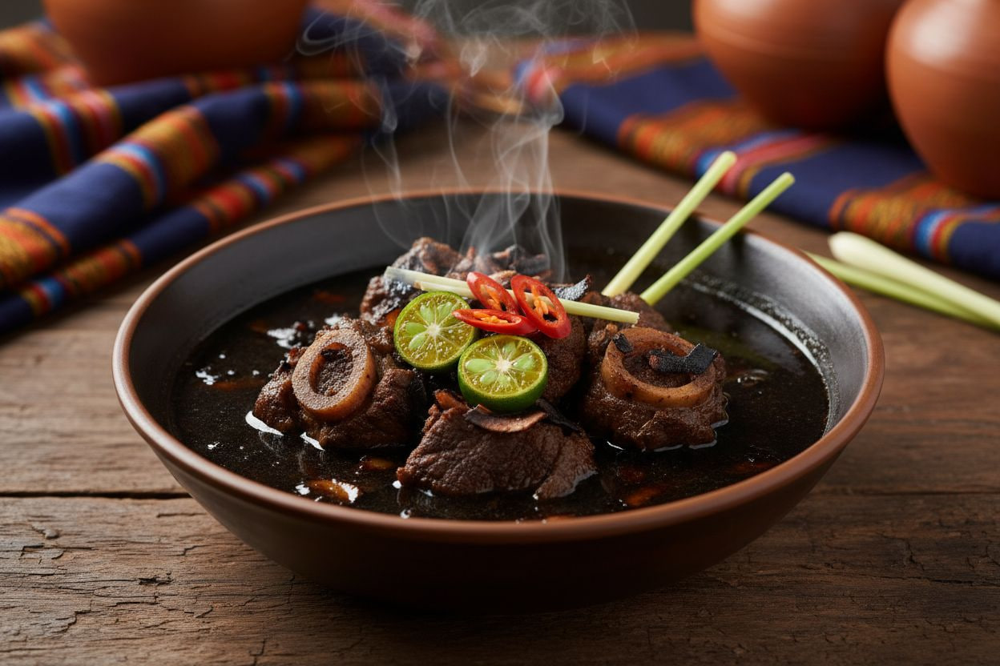

Mindanao
Tiyula Itlum
Tiyula Itum (literally translating to "Black Soup") is a celebrated royal dish of the Tausug people from the Sulu Archipelago. Often served during weddings and special occasions, it is a beef or goat soup defined by its striking pitch-black broth. This color and its unique, roasted, earthy flavor come from pamapa itum, a spice paste heavily reliant on burnt coconut meat. It also features a warm, spicy kick from ginger, turmeric, and chilies.

Gather
Ingredients
- Beef chunks (with bone and marrow preferred)
- Burnt coconut meat (niyog), pounded into a paste
- Lemongrass (tanglad), pounded
- Turmeric (luyang dilaw), pounded
- Ginger and garlic, pounded
- Galangal (langkawas), optional but traditional
- Bird's eye chilies (siling labuyo)
- Salt or fish sauce to taste
- Cooking oil and water
Make it
Recipe
- To make the pamapa itum (burnt coconut paste), roast grated mature coconut meat in a dry pan until it turns completely black (but not completely ashed). Pound it in a mortar and pestle along with garlic, ginger, turmeric, and chilies until it forms a dark, oily paste.
- In a heavy pot, massage the beef chunks with a generous amount of the pamapa itum paste. Let it marinate for about 30 minutes.
- Place the pot over medium heat and sauté the beef in its marinade until the meat releases its juices and lightly browns.
- Add the pounded lemongrass and pour enough water to submerge the beef.
- Bring to a boil, then lower the heat to a simmer. Cover and cook for 2 to 3 hours until the beef is meltingly tender.
- Season with salt or fish sauce, and add more chilies if you prefer it spicier.
- Serve piping hot with rice.